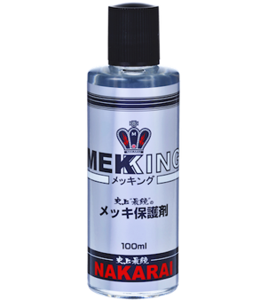
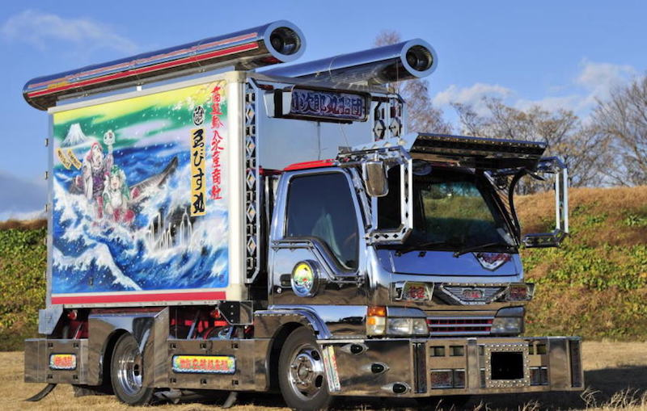
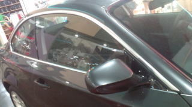
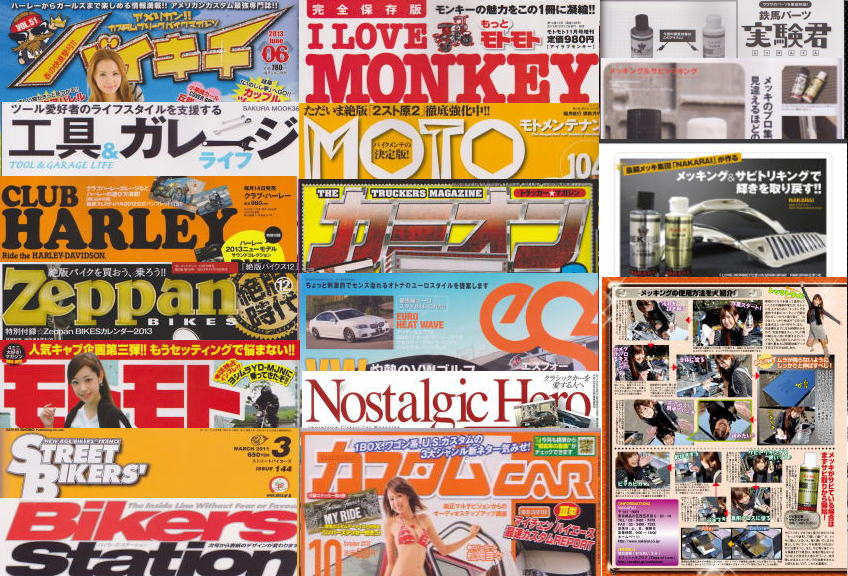
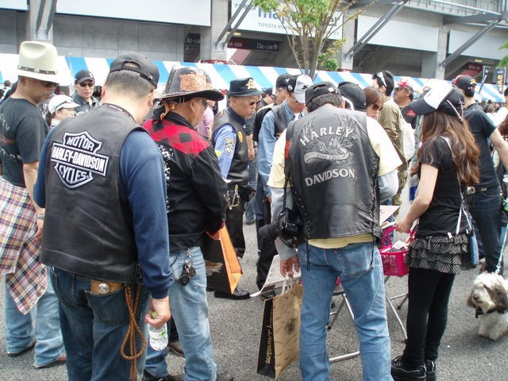
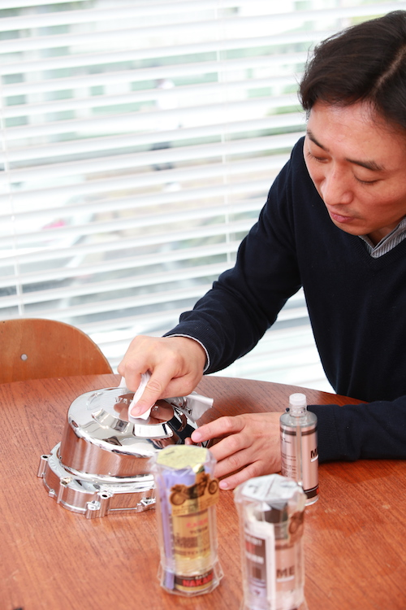
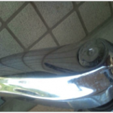
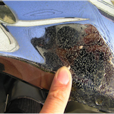
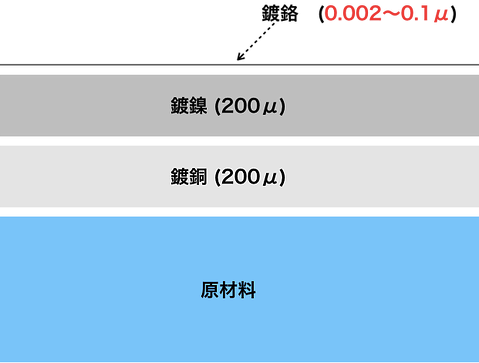

镀铬层虽如镜面般光亮，但有些细微的气孔是肉眼无法查觉。水和灰尘就会从这个小细孔进入到底材后产生气泡和铁锈。
MEKKING是一种化学物质，经由涂抹擦拭，让细颗粒复盖气孔，提高耐腐蚀性。

您对电镀零件感到困扰吗？
- 持续电镀的光泽！
- 想了解电镀的清洗方法！
- 不懂电镀的使用方法…
- 想让机械有光泽
- 想让爱好使用者见证！
- 想要增加光泽，受到肯定。
- 总而言之最支持电镀！
这是可以解决的！

什么是电镀保护剂？
专业的电镀工厂所开发的史上最强电镀保护剂！
电镀公司所开发的MEKKING即使在梅雨季，放置屋外也不容易生锈！
这是本公司产品不一样的地方!
缩短作业时间！
 (1) 清除附着在电镀上污垢
2) 请滴上1或2滴的MEKKING，擦拭均匀。
(1) 清除附着在电镀上污垢
2) 请滴上1或2滴的MEKKING，擦拭均匀。
※请务必擦拭均匀，避免造成彩虹纹
 (3) 大约5~10分钟会产生硬化，确认是否造成彩虹纹。若未造成彩虹纹，需静候一天使其完全硬化(24小时)
(3) 大约5~10分钟会产生硬化，确认是否造成彩虹纹。若未造成彩虹纹，需静候一天使其完全硬化(24小时)
显着提高的耐腐蚀性！
看起来很光滑的表面下，有很多肉眼看不到的细孔。
经由填补这个细孔，加强耐腐蚀的效果。
※尽管电镀本身具有极强的耐腐蚀性，但小孔会导致锈蚀。
MEKKING旨在填补这些孔，因此它将显着改善耐腐蚀性。
使用电镀保护剂 & 除锈剂后，会有这样的成果。
 简化电镀的清洁方式
简化电镀的清洁方式
特续保持光泽感！

一瓶MEKKING，能够保养10台电子花车
MEKKING一次只需使用1〜2滴，即可用在10㎝×10㎝大小的布上。
一瓶约可给30台摩托车用。
即便是电子花车，一瓶也可以给10台卡车使用。
 MEKKING也不怕海水
MEKKING也不怕海水
水上摩托车涂上了MEKKING之后，也不会因为海水的原因导致生锈，推荐给居住在海边附近的居民使用。

非常适合欧洲品牌汽车的车门饰条（防蚀铝）！
对于欧洲品牌汽车的车门饰条（防蚀铝）效果非常大！实际上欧洲品牌汽车的车门饰条是没有电镀的，许多氧化铝容易腐蚀。
建议在新车的状态下就定期的使用MEKKING维持光泽度。
在购买新车的同时，可以解决欧洲汽车特有的周期性涂层腐蚀问题。已经腐蚀的部份也可完全去除。
(由于单除锈剂对防蚀铝的腐蚀效果不强，我们需要用铝化合物等去除腐蚀，请清洗并涂上MEKKING")
刊登于许多专业杂志中


在电镀爱好者中非常受欢迎
本公司产品被大多数的哈雷骑士所喜好
在Harley Davidson短短两天的展场中，售出147瓶！

在日本电商网站获得化学类销售第一名
日本艺人「岩城滉一」是MEKKING爱用者！
开发人员的想法

最近「电镀」给人易生锈，剥落，难处理的负面形象。
但这是近年来由于低成本制造，导致「电镀品质」大幅降低，原本电镀是一个非常出色的产品。
由于电镀品质不良，无法发挥功能，所以我们开发了耐腐蚀性的化学保护剂MEKKING。
使用时的注意事项
- MEKKING是保护而不是抛光的最佳选择。MEKKGIN含蜡和其他磨料，抛光时可能会导致电镀层剥落。
- 使用MEKKING后，不需要上蜡。因为蜡在金属被油污氧化之前，氧化自身以保护金属膜，同时也会受到油污影响而腐蚀
因为MEKKING是玻璃膜，所以与油相比下不易氧化。
- MEKKING也对电镀塑胶零件很有效。因为电镀层很薄，MEKKING可以防止镀层剥落
- 若零件已经生锈，建议使用SABITORI KING。
它不会照成镀层的剥离，并具有优良的防锈性能。 同时有效去除污垢，避免锈蚀伤害。
- 请多多支持史上最强的MEKKING保护镀膜品质！SABITORI KING严格的去除铁锈！
电镀的特征
- 外观很漂亮！
- 在空气中不易变色
- 耐腐蚀性良好
电镀常用于摩托车、汽车，卡车零件的外装，缺点是容易生锈。
这是因为水和灰尘会从无数的细孔进入，导致电镀底层生锈。
※ 电镀层本身很难被锈蚀，所以在电镀层被破坏之前它会从细孔内部生锈！

(1) 初期阶段
产生水斑

(2) 中期阶段
产生锈斑

(3) 末期阶段
随着时间增长，锈斑范围扩大，容易剥落。

(4) 结束
表面电镀层脱落的初期到中期阶段时，就需要采取措施，放到后期则会导致电镀膜无法修愎。
为了保护电镀，不能打蜡？
这是常被提起的问题。分别有优点和缺点。优点是腊的主要成份是石油，成本较便宜。
缺点是油是主要成分，所以蜡在金属被氧化之前，会先氧化自身并保护金属膜，但是油的腐蚀污垢也会引起生锈。
做个比方来说，这就像是女性使用的化妆品，如果不常使用，就会引起皮肤问题。最大的缺点是蜡中含有抛光剂，如果你反复研磨，抛光会造成电镀层被刮伤。
※ 黄金色部份的镀铬脱落，底部镀镍出现，电镀将会无光泽
※ 单纯的金属（例如不锈钢）若被抛光，基材也是不锈钢，所以没有问题，但是电镀不应该抛光的原因请看下面图片解说。
镀铬层非常的薄
镀铬层的厚度约为0.002〜0.1微米。
※ 1微米= 1/1000毫米
如果您选择不含研磨剂的蜡，则需要经常重新涂抹。(就像女性每天要保养一样)
由于过于抛光，请注意底层的镀镍！为什么抛光镀铬后，容易出现小刮痕！
镀铬膜镜面光滑度高，所以容易看出刮痕。

错误的使用范例
用毛巾沾取MEKKING涂抹时，会产生刮痕。请避免使用布或毛巾涂抹！
※ 因为污垢会累积，所以有灰尘和堆积物时容易引起刮伤。由于镀铬的镜面反射率高，所以只要受到一点刮伤，就非常明显。
※ 一旦有刮伤，就难以修复
那么，什么是最好的镀铬保养方法？
正确的作法不是抛光镀铬而是轻轻擦拭。
镀铬的缺点？→有细孔
镀铬的耐腐蚀性？→良好
改善方法→如果堵住这个细孔，耐腐蚀性能会立即上升
不锈钢能防止生锈吗？
不锈钢由镍+铬金属合金制成。换句话说，如果镀铬也堵住这个孔，则可以获得与不锈钢相当的耐腐蚀性。
而可以有此效果的就是MEKKING。
通常，当在电镀表面上涂抹某些东西时，光泽常常受到损害，但是电镀是通过施加铬的光亮剂来完成的，同时改善了电镀的镜面光泽，所以在使用之后，会增加铬独特的光泽。
使用电镀之前，您首先要先使用SABITORI KING除锈！它可以在不影响电镀层的情况下去除锈蚀。(如果使用SABITORI KING无法修复，亦代表锈蚀太深，只能通过重新电镀复制)